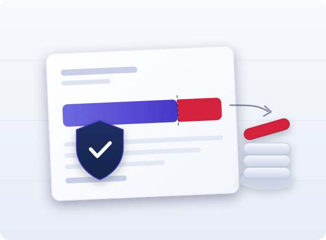

Od 1 stycznia 2027 r. rośnie płaca minimalna, a razem z nią — automatycznie — ta część pensji, której komornik zająć nie może. Dla osoby zarabiającej najniższą krajową na pełnym etacie oznacza to, że przy zwykłych długach — kredycie, pożyczce, zaległych rachunkach — z wypłaty nie powinno ubyć nic. Przy alimentach reguły są zupełnie inne. Poniżej wyliczamy kwotę wolną krok po kroku, pokazujemy, jak działają dwa limity naraz, i wyjaśniamy to, o co cudzoziemcy pytają najczęściej: czy zajęcie wynagrodzenia zagraża zezwoleniu na pracę i pobytowi.
- Płaca minimalna 2027 — liczba, od której wszystko zależy
- Kwota wolna od potrąceń — skąd bierze się 3703,93 zł
- Ile komornik może zająć — granice 50 i 60 procent
- Dwa ograniczenia działają jednocześnie — przykłady
- Niepełny etat, zlecenie i minimalna stawka godzinowa
- Pieniądze na koncie — druga, osobna kwota wolna
- Obowiązki pracodawcy i dłużnika — grzywny do 5000 zł
- Cudzoziemiec a egzekucja — czy zajęcie zagraża zezwoleniu
- Podstawa prawna i źródła
1. Płaca minimalna 2027 — liczba, od której wszystko zależy
Cała konstrukcja ochrony wynagrodzenia jest przypięta do jednej kwoty. Rozporządzenie Rady Ministrów z 14 września 2026 r. (Dz.U. 2026 poz. 1213), wydane na podstawie art. 2 ust. 5 ustawy o minimalnym wynagrodzeniu za pracę, ustala od 1 stycznia 2027 r. dwie wartości:
- minimalne wynagrodzenie za pracę — 4950 zł brutto miesięcznie (§ 1),
- minimalną stawkę godzinową — 32,30 zł (§ 2), która dotyczy zlecenia i umowy o świadczenie usług.
Podniesienie płacy minimalnej automatycznie podnosi kwotę wolną od potrąceń. Nie trzeba żadnej osobnej nowelizacji — Kodeks pracy odsyła do minimalnego wynagrodzenia, a nie do sztywnej kwoty.
2. Kwota wolna od potrąceń — skąd bierze się 3703,93 zł
Zgodnie z art. 871 § 1 pkt 1 Kodeksu pracy (t.j. Dz.U. 2026 poz. 1245) przy egzekucji należności innych niż alimentacyjne wolna od potrąceń jest kwota minimalnego wynagrodzenia przysługującego pracownikowi zatrudnionemu w pełnym wymiarze czasu pracy — po odliczeniach. W praktyce chodzi o minimalną krajową „na rękę”. Przy założeniu, że pracownik ma ukończone 26 lat, złożył PIT-2, ma podstawowe koszty uzyskania przychodu i nie uczestniczy w PPK, wyliczenie wygląda tak:
| Składnik | Podstawa | Kwota |
|---|---|---|
| Wynagrodzenie brutto | § 1 rozporządzenia | 4950,00 zł |
| Składka emerytalna 9,76% | od 4950 zł | − 483,12 zł |
| Składka rentowa 1,5% | od 4950 zł | − 74,25 zł |
| Składka chorobowa 2,45% | od 4950 zł | − 121,28 zł |
| Składka zdrowotna 9% | od 4271,35 zł | − 384,42 zł |
| Zaliczka na PIT 12% | podstawa 4021 zł, minus 300 zł | − 183,00 zł |
| Kwota wolna od potrąceń | wynagrodzenie netto | 3703,93 zł |
Tyle powinno zostać na koncie pracownika pełnoetatowego przy egzekucji zwykłego długu. Osoba zarabiająca dokładnie minimalną krajową nie straci więc z pensji ani złotówki na spłatę kredytu czy pożyczki.
Kwota wolna ma też dwa niższe warianty: 75% tej kwoty przy potrącaniu zaliczek pieniężnych udzielonych pracownikowi i 90% przy karach pieniężnych z art. 108 Kodeksu pracy (art. 871 § 1 pkt 2 i 3).
3. Ile komornik może zająć — granice 50 i 60 procent
Kwota wolna to tylko jedno z dwóch ograniczeń. Drugie to procentowy limit z art. 87 § 3 Kodeksu pracy:
- do trzech piątych (60%) wynagrodzenia — przy egzekucji świadczeń alimentacyjnych,
- do połowy (50%) wynagrodzenia — przy egzekucji innych należności oraz przy potrącaniu zaliczek pieniężnych.
Kolejność potrąceń jest sztywna i wynika z art. 87 § 1 i 2: najpierw alimenty, potem inne należności egzekwowane tytułem wykonawczym, dalej zaliczki pieniężne, na końcu kary porządkowe. Potrącenia na należności niealimentacyjne i zaliczki łącznie nie mogą przekroczyć połowy wynagrodzenia, a razem z alimentami — trzech piątych (art. 87 § 4).
Warto też wiedzieć, że dodatkowe wynagrodzenie roczne, nagroda z zakładowego funduszu nagród oraz udział w zysku podlegają egzekucji alimentacyjnej do pełnej wysokości (art. 87 § 5). Przy „trzynastce” ochrona procentowa nie działa.
4. Dwa ograniczenia działają jednocześnie — przykłady
Przy zwykłym długu komornik musi zmieścić się w obu limitach naraz. Zajmuje tę kwotę, która jest niższa: różnicę między wynagrodzeniem a kwotą wolną albo połowę wynagrodzenia.
| Wynagrodzenie netto | Nadwyżka ponad kwotę wolną | Połowa wynagrodzenia | Komornik zajmie |
|---|---|---|---|
| 3703,93 zł | 0 zł | 1851,97 zł | 0 zł |
| 5000 zł | 1296,07 zł | 2500 zł | 1296,07 zł |
| 6000 zł | 2296,07 zł | 3000 zł | 2296,07 zł |
| 9000 zł | 5296,07 zł | 4500 zł | 4500 zł |
Widać regułę: przy niższych zarobkach decyduje kwota wolna, przy wyższych — limit procentowy. Punkt przełamania wypada przy około dwukrotności kwoty wolnej, czyli nieco ponad 7400 zł netto. To wyliczenia modelowe: rzeczywiste potrącenie zależy od rodzaju należności, liczby zajęć i składników wynagrodzenia w danym miesiącu.
5. Niepełny etat, zlecenie i minimalna stawka godzinowa
Przy niepełnym wymiarze czasu pracy kwota wolna maleje proporcjonalnie do etatu — art. 871 § 2 Kodeksu pracy. Na pół etatu chroniona jest połowa kwoty z sekcji 2, czyli około 1851,97 zł. Nie ma tu uznaniowości.
Przy umowie zlecenia ochrona nie wynika wprost z Kodeksu pracy, ale z odesłania w Kodeksie postępowania cywilnego. Art. 833 § 21 k.p.c. (t.j. Dz.U. 2026 poz. 468) nakazuje stosować art. 87 i art. 871 Kodeksu pracy odpowiednio do wszystkich świadczeń powtarzających się, których celem jest zapewnienie utrzymania albo stanowiących jedyne źródło dochodu dłużnika będącego osobą fizyczną.
Od 1 stycznia 2027 r. zleceniobiorcy przysługuje co najmniej 32,30 zł brutto za godzinę (§ 2 rozporządzenia Dz.U. 2026 poz. 1213). Ochrona przed egzekucją nie zastępuje tego minimum — to dwie odrębne sprawy, choć obie wynikają z tego samego rozporządzenia.
6. Pieniądze na koncie — druga, osobna kwota wolna
Wiele osób przegląda sald o rachunku i nie rozumie, dlaczego bank zablokował środki, które „już były chronione” u pracodawcy. To dwa niezależne mechanizmy. Zajęcie wynagrodzenia dotyczy wypłaty u pracodawcy; zajęcie rachunku bankowego — środków już przelanych.
Zgodnie z art. 54 ust. 1 Prawa bankowego (t.j. Dz.U. 2026 poz. 38) środki na rachunkach oszczędnościowych, oszczędnościowo-rozliczeniowych i terminowych lokat oszczędnościowych jednej osoby — niezależnie od liczby umów — są wolne od zajęcia w każdym miesiącu kalendarzowym do wysokości 75% minimalnego wynagrodzenia. W 2027 r. daje to 3712,50 zł miesięcznie. Przy rachunku wspólnym kwota jest ta sama, niezależnie od liczby współposiadaczy (art. 54 ust. 2).
Odrębnie chronione są środki pochodzące ze świadczeń wymienionych w art. 833 § 6 k.p.c. — między innymi świadczeń rodzinnych, świadczenia wychowawczego, dodatków pielęgnacyjnych i świadczeń z pomocy społecznej. Te nie podlegają egzekucji w ogóle, a na rachunku bankowym chroni je art. 54a Prawa bankowego. Jeżeli takie środki zostały zablokowane, należy wykazać ich źródło.
7. Obowiązki pracodawcy i dłużnika — grzywny do 5000 zł
Zajęcie wynagrodzenia uruchamia szereg obowiązków po stronie pracodawcy. Komornik wzywa go, by nie wypłacał dłużnikowi nic poza częścią wolną od zajęcia i przekazywał zajętą część wierzycielowi albo komornikowi (art. 881 § 3 k.p.c.). W ciągu tygodnia pracodawca musi przedstawić zestawienie wynagrodzenia dłużnika za trzy miesiące poprzedzające zajęcie i podać, w jakiej kwocie i w jakich terminach będzie przekazywał potrącenia (art. 882 § 1).
Za niewykonanie tych obowiązków, niezłożenie oświadczenia w terminie albo zaniedbanie przesłania dokumentów zajęcia nowemu pracodawcy komornik wymierza grzywnę do 5000 zł, powtarzalną przy dalszym uchylaniu się (art. 886 § 1 k.p.c.). Pracodawca, który wypłaci dłużnikowi zajętą część wynagrodzenia, odpowiada ponadto za szkodę wyrządzoną wierzycielowi (art. 886 § 3).
8. Cudzoziemiec a egzekucja — czy zajęcie zagraża zezwoleniu
To pytanie wraca w każdej rozmowie na ten temat, zwykle w wersji: „skoro komornik zabiera mi część pensji, to czy nadal zarabiam tyle, ile napisano w decyzji?”.
Przepisy o egzekucji nie różnicują dłużników według obywatelstwa. Art. 87 i 871 Kodeksu pracy mówią o „pracowniku”, art. 833 § 21 k.p.c. — o „dłużniku będącym osobą fizyczną”, a art. 54 Prawa bankowego — o środkach „jednej osoby”. Cudzoziemiec pracujący w Polsce korzysta z tej samej kwoty wolnej i tych samych limitów co obywatel polski.
Kluczowe jest natomiast rozróżnienie, które łatwo przeoczyć. Potrącenie dotyczy wypłaty, a nie wysokości należnego wynagrodzenia. Art. 87 § 1 Kodeksu pracy stanowi, że potrąceń dokonuje się z wynagrodzenia za pracę — wynagrodzenie jest więc najpierw ustalone w umowie, a dopiero potem pomniejszane przy wypłacie. Komornik sięga zatem po część kwoty już należnej pracownikowi, a nie po samą stawkę z umowy. W decyzji o zezwoleniu na pobyt czasowy i pracę wskazuje się najniższe wynagrodzenie, które będzie otrzymywać cudzoziemiec na danym stanowisku (art. 118 ust. 1 pkt 3 ustawy o cudzoziemcach) — i to ono pozostaje punktem odniesienia przy ocenie warunków zatrudnienia. Zajęcie samo w sobie nie jest zmianą tych warunków; zmianą byłoby dopiero obniżenie stawki w umowie.
Druga rzecz praktyczna: obowiązek powiadomienia komornika o zmianie pracodawcy (art. 886 § 4 k.p.c.) dotyczy cudzoziemców dokładnie tak samo, a przy legalizacji pracy zmiany pracodawcy bywają częste. Niezależnie od egzekucji zmiana podmiotu powierzającego pracę zwykle wymaga odrębnych czynności w sprawie pobytowej — i te dwa tory trzeba prowadzić równolegle, bo terminy w nich nie są wspólne.
Komornik zajął Twoje wynagrodzenie?
Sprawdzimy, czy potrącenie zostało policzone prawidłowo i czy zastosowano właściwą kwotę wolną, a przy zleceniu pomożemy wykazać przesłanki ochrony z art. 833 § 21 k.p.c. Zadbamy też o to, żeby rozwiązania przyjęte na czas egzekucji nie naruszyły warunków Twojego zezwolenia na pracę i pobytu.
Umów bezpłatną konsultacjęNota prawna: artykuł ma charakter informacyjny i nie stanowi porady prawnej. Stan prawny: październik 2026, z uwzględnieniem kwot obowiązujących od 1 stycznia 2027 r. Wyliczenia mają charakter modelowy i opierają się na założeniach podanych w tekście; przy zmianie zasad podatkowo-składkowych kwota netto ulegnie zmianie. Każda sprawa jest inna — przed podjęciem decyzji skonsultuj się z prawnikiem. Administrator danych: Dariusz Włodarczyk Kancelaria TRC.
Podstawa prawna i źródła: ustawa z 26 czerwca 1974 r. – Kodeks pracy (t.j. Dz.U. 2026 poz. 1245) — art. 87, art. 871, art. 108; ustawa z 17 listopada 1964 r. – Kodeks postępowania cywilnego (t.j. Dz.U. 2026 poz. 468) — art. 833 § 1–6, art. 881, art. 882, art. 884, art. 886; rozporządzenie Rady Ministrów z 14 września 2026 r. w sprawie wysokości minimalnego wynagrodzenia za pracę oraz wysokości minimalnej stawki godzinowej w 2027 r. (Dz.U. 2026 poz. 1213) — § 1 i § 2; ustawa z 10 października 2002 r. o minimalnym wynagrodzeniu za pracę (t.j. Dz.U. 2024 poz. 1773) — art. 2 ust. 5; ustawa z 29 sierpnia 1997 r. – Prawo bankowe (t.j. Dz.U. 2026 poz. 38) — art. 54 i art. 54a; ustawa z 12 grudnia 2013 r. o cudzoziemcach (t.j. Dz.U. 2025 poz. 1079) — art. 118 ust. 1 pkt 3. Inspiracja tematem: Gazeta Prawna. Wyliczenia, zestawienia i omówienie — materiał własny Centrum Obsługi Spraw Cudzoziemców; wszystkie przepisy i kwoty sprawdzone w tekstach ogłoszonych w Dzienniku Ustaw. Ilustracja: materiał własny COSC.